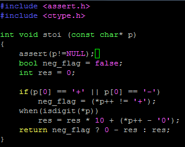

创建时间: 2015/07/16 17:39; 更新时间: 2015/06/06 15:27
C intro
循环变量
for (i = 0; i < len(s); i++)
for (i = 0, int n = len(s); i < n; i++)字母转变
s[i] = s[i] - ('a' - 'A')

stoi
随机
#include <stdlib.h>
#include <time.h>
srand(time(NULL));
int num = rand() % 5;文件读写
FILE* inptr = fopen("filename", "r")
if (inptr == NULL)
{
printf("some error");
return 1;
}
type s;
fread(&s, sizeof(date will be read), n, inptr); //n 是要读入的data的数目, 一般为1
fwrite(&s,sizeof(date will be writeen),n outptr);
fseek(inptr, n, SEEK_CUR) // 移动光标, n是n个byte, SEEK_CUR表示当前位置.
fclose(inptr);文件读写的时候有个非常奇怪的地方, 比如说元文件是AA BB CC DD. .
如果定义一个4字节的unsigned int, 一次性读入两个字节, 用printf("%X",)出来的是BBAA
也就是说读进去的是倒置的, 两个字节为单位. 但是用fwrite, 得到的还会是AABB.
static 变量
在函数文件中, 如果多个函数要共用一个变量, 需要在文件前部分声明静态变量, 并赋值.
static int account = 0;
static node* p[10] = {NULL}其他
我有特殊的打印技巧^_^ escape